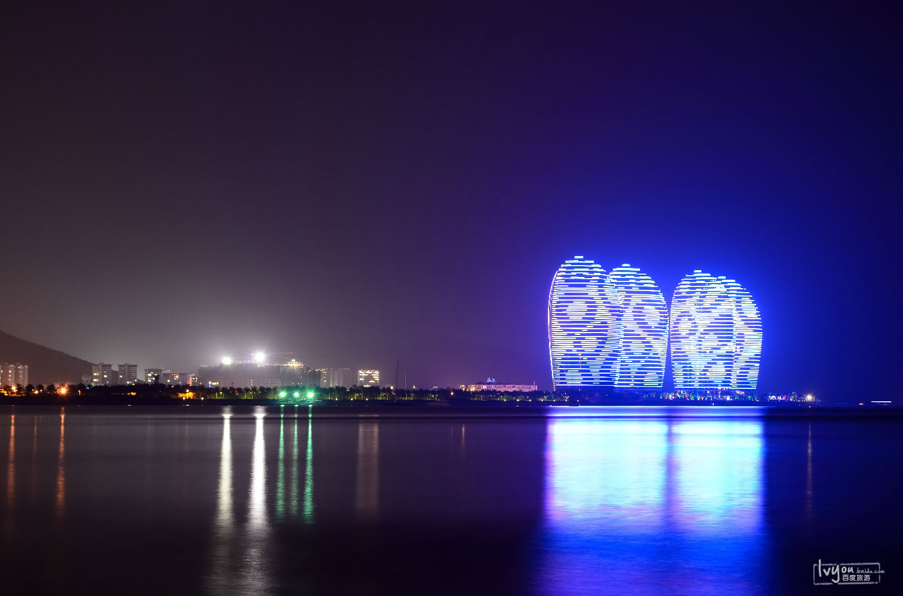
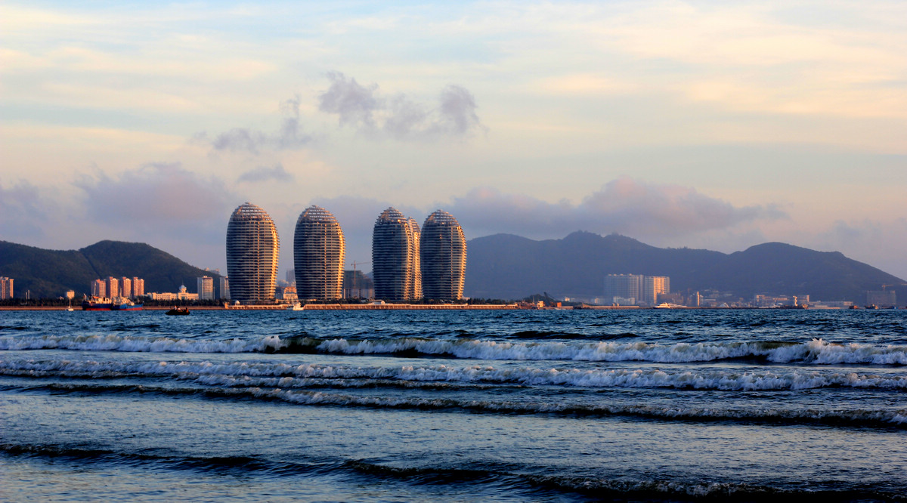

- 
- 

三亚凤凰岛位于三亚市三亚湾度假区“阳光海岸”的核心，是在大海礁盘之中吹填出的人工岛。
该岛四面临海，由一座长394米、宽17米的跨海观光大桥与市区滨海大道光明路相连，距三亚市繁华商业主路解放路垂直距离小于1000米，
南侧临鹿回头公园，东南侧临三亚河入海口，西侧为东、西玳瑁岛，北侧濒临优美的17公里长三亚湾海滩。
凤凰岛四面临海，拥有得天独厚的山海天旅游风光，具备海上娱乐、水上运动和全季候度假旅游的条件。是世界十大国际邮轮母港之一。
景点类型：海岛
最佳季节：全年
著名景点：国际邮轮港、超星级酒店、国际养生度假中心、奥运主题公园、国际游艇会所